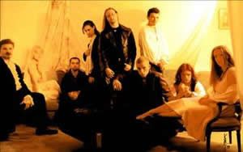
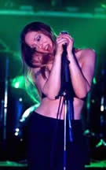
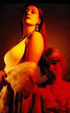

A história dessa banda francesa começou
quando Dorian e Jarlaath se conheceram após assistirem
a um Concerto de música clássica em 1996. Assim,
perceberam que havia uma imensa similaridade musical entre eles.
Por exemplo, ambos concordavam que o Metal deveria sofrer influência
clássica e não podia limitar-se aos vocais urrados
e riffs repetitivos. Porém, até aquele momento não
havia bandas que seguissem este conceito.
Pouco
tempo depois, os jovens músicos se reuniram e realizaram
um ensaio, contando com a presença de um soprano e um teclado.
Jarlaath também inseriu o oboé. O ensaio foi tão
bem sucedido que eles decidiram criar a banda Imperatória.
Porém, em novembro de 1996, houve uma divisão. Jarlaath,
Dorian e Herr Rikk se uniram a outros três músicos
e fundaram o Penumbra.
A primeira apresentação ao vivo
ocorreu no Festival da Universidade de St. Denis, onde tocaram
apenas bandas de Metal. O público se entusiasmou e aclamou
os novatos. Assim, foram convidados a tocar com a banda francesa
de metal Misanthrope. Novamente a repercussão foi positiva.
O respeito e o espaço foram sendo conquistados aos poucos.
A banda também percebeu que o aspecto visual das apresentações
exercia um papel muito importante. A partir deste momento, investiram
em artigos teatrais como fantasias e pirotecnia.
Em 1997, o Penumbra gravou sua primeira demo intitulada
Falling Into My Soul, que obteve um ótimo retorno
e abriu as portas para que no verão do ano seguinte, iniciassem
as gravações do álbum Emanate. Nesse
período, Benedicte deixou a banda para ingressar no Misanthrope,
em seu lugar chegou Zoltan (teclados). David (irmão de
Herr Rikk), substitui Nicolas que foi convidado pelo Forest of
Souls; além de outros integrantes que também foram
substituídos.
As
faixas que compõem Emanate foram arranjadas com o auxílio
de dois sopranos e um barítono: Medusa, Elise e Aramis.
Após o lançamento em 1999, segue-se a divulgação
do álbum com apresentações pela França
e Suíça.
No ano de 2001, Scyllia deixa o Penumbra para
seguir em projetos paralelos; além de Hekchen e Aldric.
O baterista Garlic e o guitarrista e vocal Agone ingressam na
banda. Nos meses de abril e maio iniciam-se as gravações
do segundo trabalho: The Last Bewitchment.
Este álbum só foi concluído
no final do mesmo ano, e logo após, Medusa também
deixa a banda alegando razões pessoais. The Last Bewitchment
contou com o apoio do renomado Terje Refsnes, produtor de artistas
como The Sins
of Thy Beloved e Tristania.
Além de dois violinos, uma viola, um cello e um coral composto
por sete vozes.
No início de 2002, a cantora lírica
Kyrsten ingressa no Penumbra. A banda retoma as apresentações
ao vivo, desta vez com a participação da convidada
Stephanie. Neste período foram realizadas apresentações
na Holanda e na França, ao lado do Within
Temptation.
O
terceiro trabalho intitulado Seclusion foi lançado
em 2003. Desta vez com Anita Covelli nos vocais, o álbum
dá continuidade ao anterior e conclui a trilogia iniciada
com Emanate. Seclusion caracteriza-se através das guitarras
consistentes; além dos ricos arranjos de cordas e sopros.
A faixa Hope traz uma atmosfera gótica, intensificada
em Conception e Enclosed.
A banda é muitas vezes comparada à
uma mistura de estilos de Tristania e Therion,
originando um novo gênero, um tanto indefinido.
Apesar da constante substituição
de músicos, o Penumbra se mantém como uma das forças
do Metal europeu. Ao que parece, os diversos integrantes que transitaram
por esses anos, acrescentaram influências específicas
na sonoridade geral. Assim, cada álbum do Penumbra se destaca
pela originalidade.
Por
Spectrum
Downloads
Disponíveis: